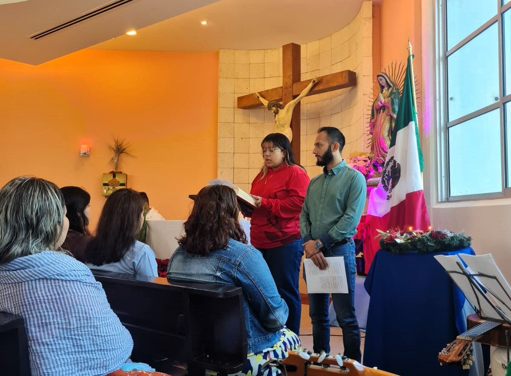

Estamos para acompañarte en tu crecimiento espiritual, humano, comunitario y cristiano en los siguientes ejes:


Coordinación General de Pastoral

Encargado de Pastoral Solidaria

Coordinador de Pastoral Catequética
Estamos en el edificio de Rectoría. Contáctanos: carismayvida@marista.edu.mx